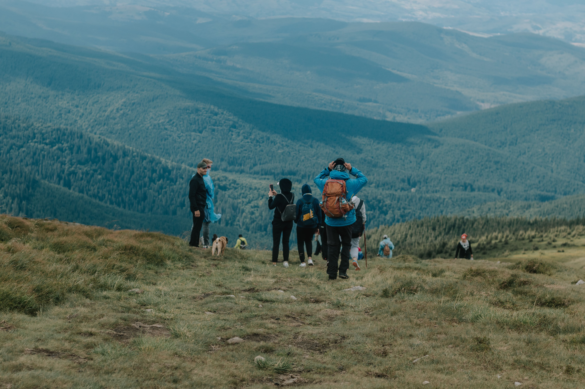
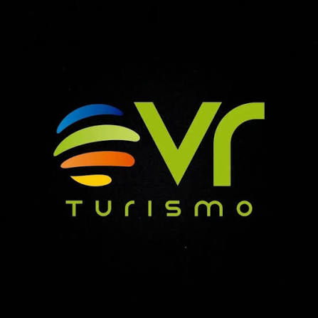

Michelle Sampaio
Diretora
Responsável pela direção, operação, acompanhamento e coordenação dos grupos.

Conheça a nossa história
Mais do que organizar viagens, gostamos de conhecer pessoas, entender seus planos e ajudar a transformar cada ideia em uma experiência especial.
VR Turismo · Volta Redonda/RJ
A VR Turismo é uma agência de viagens localizada na região da Vila Santa Cecília, em Volta Redonda/RJ. Atuamos no segmento de viagens e turismo, oferecendo soluções personalizadas para diferentes perfis de clientes.
A agência começou sua trajetória em 2008. Em 2009, Michelle Sampaio assumiu sua administração, trazendo o desejo de oferecer um atendimento mais próximo, com liberdade para planejar experiências de acordo com as necessidades de cada viajante.
Com 30 anos de experiência profissional no setor de turismo, nossa diretora acompanhou as transformações do mercado. O que começou com atuação na região de Volta Redonda hoje atende clientes de todo o Brasil e também de outros países, com o apoio da tecnologia.
Nosso jeito de atender
Acreditamos que viajar vai muito além de escolher um destino. É entender o que cada pessoa espera viver e encontrar a melhor maneira de tornar essa experiência possível.
Foi justamente com esse propósito que a VR Turismo construiu sua trajetória. Nossa proposta sempre foi oferecer um atendimento mais próximo, com liberdade para entender as necessidades de cada cliente e cuidar de cada viagem de forma especial.
Nas viagens em grupo, esse cuidado vai ainda mais longe: a própria Michelle, responsável pela agência, acompanha os viajantes durante a experiência, proporcionando mais proximidade desde o planejamento até o destino.
Seja em uma viagem individual, em família ou em grupo, queremos que nossos clientes se sintam seguros e bem acompanhados em cada etapa.
Quem faz acontecer
Por trás de cada roteiro, existe uma equipe com diferentes responsabilidades, trabalhando para que sua experiência comece bem antes do embarque.
Diretora
Responsável pela direção, operação, acompanhamento e coordenação dos grupos.
Atendimento e vendas
Atendimento presencial, vendas e atividades operacionais.
Vendas e marketing
Colaboradora nas atividades de vendas e marketing.
Documentação e eventos
Cuida dos documentos de embarque, como passaportes, vistos e vacinas, além das reservas de eventos nos destinos.
De Volta Redonda para o mundo
Estamos na região da Vila Santa Cecília, em Volta Redonda/RJ. E, com o atendimento apoiado pela tecnologia, também podemos atender viajantes de diferentes regiões do Brasil e de outros países.
Planeje sua próxima viagem
Conte para a VR Turismo o que você tem em mente. Será um prazer ajudar a tirar essa viagem do papel.
Solicitar orçamento